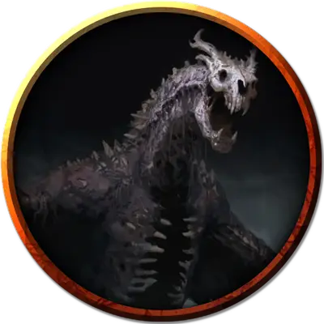

Орак Стойкий
Oracs the Enduring
Громадная Нежить, хаотично-злая, именной НИП

Класс Доспеха 22 (природный доспех)
Хиты 367 (21к20 + 147)
Скорость 40 футов, плавая 40 футов, летая 80 футов
| мод | спас | ||
|---|---|---|---|
| СИЛ | 27 | +8 | +8 |
| ЛОВ | 14 | +2 | +9 |
| ТЕЛ | 25 | +7 | +14 |
| мод | спас | ||
|---|---|---|---|
| ИНТ | 16 | +3 | +3 |
| МДР | 15 | +2 | +9 |
| ХАР | 19 | +4 | +11 |
Навыки Восприятие +16, Скрытность +9
Сопротивление урону некротическая энергия
Иммунитет к урону кислота, яд
Иммунитет к состояниям испуг, истощение, отравление, очарование, паралич
Чувства слепое зрение 60 футов, тёмное зрение 120 футов, пассивное Восприятие 26
Языки Общий, Драконий
Опасность 21 (33000 опыта)
Бонус мастерства +7
Среда обитания Болото
Особенности
Амфибия. Драколич может дышать и воздухом и под водой.
Легендарное сопротивление (3/день). Если драколич проваливает спасбросок, он может вместо этого сделать спасбросок успешным.
Сопротивление магии. Драколич совершает с преимуществом спасброски от заклинаний и прочих магических эффектов.
Природа нежити. Драколичу не требуется воздух, еда, питьё и сон.
Действия
Мультиатака. Драколич может использовать Ужасающее присутствие. Затем он совершает три атаки: одну укусом, и две когтями.
Укус. Рукопашная атака оружием: +15 к попаданию, досягаемость 15 футов, одна цель. Попадание: Колющий урон 19 (2к10 + 8) плюс урон кислотой 9 (2к8).
Коготь. Рукопашная атака оружием: +15 к попаданию, досягаемость 10 футов, одна цель. Попадание: Рубящий урон 15 (2к6 + 8).
Хвост. Рукопашная атака оружием: +15 к попаданию, досягаемость 20 футов, одна цель. Попадание: Дробящий урон 17 (2к8 + 8).
Ужасающее присутствие. Все существа на выбор дракона, находящиеся в пределах 120 футов от него и знающие о его присутствии, должны преуспеть в спасброске Мудрости Сл 19, иначе станут испуганными на 1 минуту. Существо может повторять этот спасбросок в конце каждого своего хода, оканчивая эффект на себе при успехе. Если спасбросок существа был успешным, или эффект на нём окончился, оно получает иммунитет к Ужасающему присутствию этого дракона на следующие 24 часа.
Кислотное дыхание (перезарядка 5–6). Дракон выдыхает кислоту 90-футовой линией шириной 10 футов. Все существа в этой линии должны совершить спасбросок Ловкости Сл 22, получая урон кислотой 67 (15к8) при провале, или половину этого урона при успехе.
Легендарные действия
Драколич может совершить 3 легендарных действия, выбирая из представленных ниже вариантов. За один раз можно использовать только одно легендарное действие, и только в конце хода другого существа. Дракон восстанавливает использованные легендарные действия в начале своего хода.
Обнаружение. Драколич совершает проверку Мудрости (Восприятие).
Атака хвостом. Драколич совершает атаку хвостом.
Атака крыльями (стоит 2 действия). Драколич бьёт своими крыльями. Все существа в пределах 15 футов от дракона должны преуспеть в спасброске Ловкости Сл 23, иначе получат дробящий урон 15 (2к6 + 8) и будут сбиты с ног. После этого дракон может пролететь на расстояние, не превышающее половину скорости полёта.
Логово
Чёрные драконы обитают в болотах на оборванных окраинах цивилизации. Логово чёрного дракона обычно располагается в мрачных пещерах, гротах или руинах, которые хотя бы частично затоплены, и в которых есть заводи, в которых дракон может отдыхать, переваривая своих жертв. Логово заполняют изъеденные кислотой кости предыдущих жертв и облепленные мухами останки свежих убитых. На всё это взирают обваливающиеся статуи. Многоножки, скорпионы и змеи населяют логово, наполненное вонью смерти и разложения.
Действия логова
При значении инициативы «20» (в случае ничьей проигрывает всем конкурентам) дракон совершает действие логова, чтобы вызвать один из следующих эффектов; дракон не может использовать один и тот же эффект два раунда подряд:
• Вода в заводях, которые дракон видит в пределах 120 футов, вздымаются в попытке захватить с собой стоящих рядом. Все существа, находящиеся на земле в пределах 20 футов от такой заводи, должны преуспеть в спасброске Силы Сл 15, иначе волна сбивает их с ног и утягивает на 20 футов в воду.
• Облако роящихся насекомых заполняет сферу 20-футового радиуса с центром в точке, которую выберет дракон в пределах 120 футов от себя. Это облако огибает углы и остаётся на месте, пока дракон не рассеет его действием, не воспользуется другим действием логова или не умрёт. Облако создаёт слабо заслонённую местность. Все существа в этом облаке, когда оно появляется, должны совершить спасбросок Телосложения Сл 15, получая при провале колющий урон 10 (3к6), или половину этого урона при успехе. Существо, закончившее свой ход в облаке, получает колющий урон 10 (3к6).
• Магическая тьма распространяется от точки, которую выберет дракон в пределах 60 футов от себя, создавая сферу тьмы с радиусом 15 футов, пока дракон не рассеет её действием, не воспользуется другим действием логова или не умрёт. Тьма огибает углы. Существа с тёмным зрением не могут видеть сквозь эту тьму, а немагический свет не может её осветить. Если область действия этого эффекта пересечётся с областью света, созданного заклинанием с уровнем не больше 2, заклинание, создавшее свет, рассеивается.
Местные эффекты
Регион, в котором есть логово легендарного чёрного дракона, искажается драконьей магией, которая создаёт один или несколько следующих эффектов:
• Путешествия в пределах 6 миль вокруг логова занимают вдвое больше времени из-за того, что крепкие, густо сплетающиеся растения разрастаются еще сильнее, а топи становятся менее проходимыми, заполняясь дурно пахнущей грязью.
• Водные источники в пределах 1 мили от логова сверхъестественным образом портятся. Врагов дракона, выпивших воду из них, стошнит через несколько минут.
• Туман, слабо заслоняющий местность, покрывает землю в пределах 6 миль от логова.
• Если дракон умирает, растительность остаётся такой, какой она уже выросла, но прочие эффекты угасают за 1к10 дней.